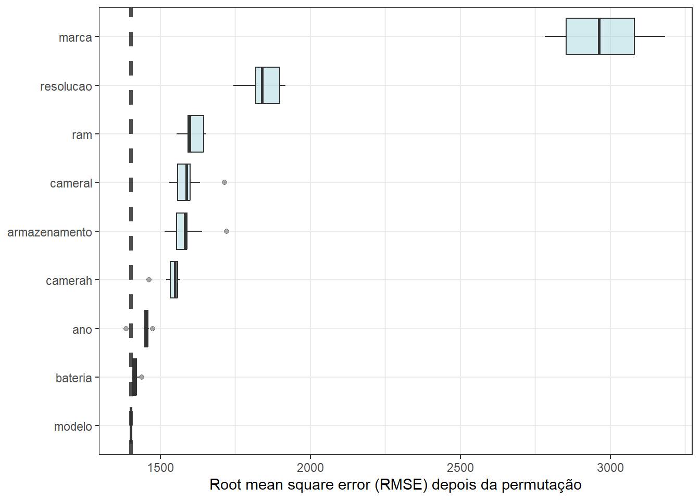
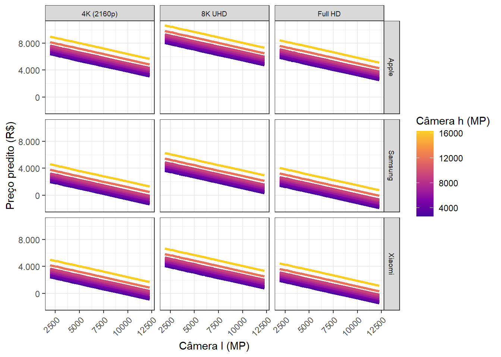

9 Regressão por vetores de suporte
9.1 Regressão por vetores de suporte para problemas lineares
As máquinas de vetores de suporte para regressão (Support Vector Regression - SVR) é um método que confirma os conceitos da teoria de aprendizado estatístico de Vapnik. O método foi inicialmente concebido para classificação, sendo chamado de máquinas de vetores de suporte, sendo posteriormente adaptado para regressão por Drucker et al. (1996). O processo de aprendizado com SVR é realizado no espaço de um subconjunto dos dados, chamados de vetores de suporte. Sejam as observações \(\{(\mathbf{x}_1, y_1), (\mathbf{x}_2, y_2), ..., (\mathbf{x}_n, y_n)\}\), com \(\mathbf{x}_i = (x_{i1}, x_{i2}, ..., x_{ik})\). O SVR busca uma função com desvio máximo \(\varepsilon\) para os dados de treinamento. A Figura 9.1 ilustra à esquerda a função perda \(\varepsilon\)-insensitiva ou insensitiva ao erro, enquanto à direita ilustra-se a idéia geral da regressão por vetores de suporte para o caso linear simples.
A linha central consiste na linha do modelo de regressão por SVR, \(\hat{y}_i = \mathbf{x}_i^T \mathbf{w} + b\), enquanto as duas outras linhas paralelas e simétricas são chamadas de margens, \(\hat{y}_i = \mathbf{x}_i^T \mathbf{w} + b \pm \varepsilon\) e os pontos que coincidem ou estão para fora desta linha são chamados de vetores de suporte e apresentam valor na função perda igual a zero ou maior, \(\xi_i \geq 0\).
Seja um modelo linear, segundo a Equação 9.1.
\[ \begin{aligned} \hat{y}_i = \mathbf{x}_i^T \mathbf{w} + b,\text{ i = 1, ..., n} \end{aligned} \tag{9.1}\]
Para estimar os parâmetros deste modelo, pode-se otimizar uma função perda mais um termo de regularização, conforme a Equação 9.2, onde \(C\) é uma constante de regularização. Este problema é similar ao problema de regressão rígida. No entanto, a constante de regularização aqui multiplica a função perda, \(\sum_i L\), e não a soma dos quadrados dos termos do modelo, \(\mathbf{w}^T\mathbf{w} = \sum_{i=1}^N w_i^2\).
\[ \begin{aligned} C\sum_{i=1}^N L(y_i, \hat{y}_i) + \mathbf{w}^T\mathbf{w} \end{aligned} \tag{9.2}\]
A função perda \(\varepsilon\)-insensitiva usada na SVR e ilustrada na Figura 9.1 é apresentada na Equação 9.3, com \(\xi_i= \lvert y_i - \hat{y}_i \rvert - \varepsilon\).
\[ \begin{aligned} L = \Biggl\{ \begin{matrix} 0 \text{, se } \lvert y_i - \hat{y}_i \rvert < \varepsilon\\ \lvert y_i - \hat{y}_i \rvert - \varepsilon \text{, cc.} \end{matrix} \end{aligned} \tag{9.3}\]
O problema primal de SVR pode ser expresso conforme a formulação Equação 9.4.
\[ \begin{aligned} \text{Min}\ \begin{Bmatrix} \frac{1}{2}\mathbf{w}^T\mathbf{w} + C\sum_{i=1}^N(\xi_i + \xi_i^*) \end{Bmatrix} \\ \textrm{s.t.: } \Biggl\{ \begin{matrix} y_i - [\mathbf{x}_i^T\mathbf{w} + b] \leq \varepsilon + \xi_i\\ [\mathbf{x}_i^T\mathbf{w} + b] - y_i \leq \varepsilon + \xi_i^* \\ \xi_i, \xi_i^* \geq 0 \end{matrix} \end{aligned} \tag{9.4}\]
Para resolver este problema mais facilmente, a formulação dual pode ser considerada. Além disso, a formulação dual permitirá a extensão da regressão por vetores de suporte para problemas não lineares. Porém, antes, é adequado apresentar a formulação lagrangeana para o problema SVR primal, conforme Equação 9.5, onde \(\alpha_i\), \(\alpha_i^*\), \(\eta_i\) e \(\eta_i^*\) são os multiplicadores de Lagrange, que devem ser não-negativos.
\[ \begin{split} L = \frac{1}{2}\mathbf{w}^T\mathbf{w} + C\sum_{i=1}^n(\xi_i + \xi_i^*) - \sum_{i=1}^n \alpha_i(\varepsilon + \xi_i - y_i + \mathbf{x}_i^T\mathbf{w} + b) \\ - \sum_{i=1}^n \alpha_i^*(\varepsilon + \xi_i^* - \mathbf{x}_i^T\mathbf{w} - b + y_i) -\sum_{i=1}^n(\eta_i\xi_i + \eta_i^*\xi_i^*) \end{split} \tag{9.5}\]
Derivando a função Lagrangeana em relação às variáveis do problema primal, \(\mathbf{w}\), \(b\), \(\xi_i\) e \(\xi_i^*\), e igualando a zero, as condições de otimalidade de primeira ordem são obtidas conforme segue.
\[ \begin{aligned} &\frac{\partial L}{\partial b} = \sum_{i=1}^n(\alpha_i - \alpha_i^*) = 0 \\ &\frac{\partial L}{\partial \mathbf{w}} = \mathbf{w} - \sum_{i=1}^n(\alpha_i - \alpha_i^*)\mathbf{x}_i = 0 \\ &\frac{\partial L}{\partial \xi_i} = C - \alpha_i - \eta_i = 0 \\ &\frac{\partial L}{\partial \xi_i^*} = C - \alpha_i^* - \eta_i^* = 0 \\ \end{aligned} \]
Substituindo os resultados das derivadas na formulação lagrangeana, obtém-se a formulação dual do problema de SVR, conforme Equação 9.6.
\[ \begin{aligned} \text{Max}\ &\begin{Bmatrix} -\frac{1}{2}\sum_{i,j}^n(\alpha_i - \alpha_i^*)(\alpha_j - \alpha_j^*)\mathbf{x}_i\mathbf{x}_j \\ -\varepsilon\sum_{i=1}^n(\alpha_i + \alpha_i^*) + \sum_{i=1}^n y_i(\alpha_i - \alpha_i^*) \end{Bmatrix}\\ \textrm{s.t.: } \Biggl\{ &\begin{matrix} \sum_{i=1}^n(\alpha_i - \alpha_i^*) = 0\\ \alpha_i, \alpha_i^* \in [0,C] \\ \end{matrix} \end{aligned} \tag{9.6}\]
Nesta formulação dual, \(\mathbf{w}\) é reescrito como uma combinação linear das observações de treinamento, \(\mathbf{x}_i\mathbf{x}\), \(\eta_i\) e \(\eta_i^*\) são descritos em função de \(C\), \(\alpha_i\) e \(\alpha_i^*\). Além disso, \(\mathbf{w} = \sum_{i=1}^n(\alpha_i + \alpha_i^*)\mathbf{x}_i\). Logo, na regressão por vetores de suporte, o modelo inicial, \(\hat{y}_i = \mathbf{x}_i^T \mathbf{w} + b\), é reescrito segundo a Equação 9.7, incluindo apenas os vetores de suporte, ou seja, \(\mathbf{x}_i\) tal que \(\alpha_i > 0\) ou \(\alpha_i^* > 0\), \(i = 1, ..., n\), com \(\xi_i\) definindo a folga ou erro para além da margem. A SVR aumenta a dimensionalidade no espaço dos vetores de suporte em detrimento do espaço de preditores.
\[ \hat{y} = \sum_{i=1}^n(\alpha_i - \alpha_i^*)\mathbf{x}_i\mathbf{x} + b \tag{9.7}\]
9.2 Truque de kernel e SVR para problemas não lineares
O modelo SVR depende apenas do produto escalar dos dados de treinamento, \(\mathbf{x}_i\). Para aproximar funções mais complexas, o produto escalar \(\mathbf{x}_i\mathbf{x}_j\) pode ser substituído por um kernel, \(k(\mathbf{x}_i,\mathbf{x}_j)\). Algumas opções incluem o kernel linear, \(k(\mathbf{x}_i,\mathbf{x}_j) = \mathbf{x}_i\mathbf{x}_j\), o polinomial, \(k(\mathbf{x }_i,\mathbf{x}_j) = (\gamma\mathbf{x}_i\mathbf{x}_j + c_0)^d\), e o kernel de base radial, \(k(\mathbf{x}_i,\mathbf{x }_j) = \exp(-||\mathbf{x}_i - \mathbf{x}_j||^2/(2\sigma^2))\). Portanto, o modelo SVR final pode ser expresso conforme a Equação Equação 9.8. De acordo com o kernel selecionado, os hiperparâmetros \(\varepsilon\), \(C\) e outros específicos do kernel devem ser determinados por validação cruzada e grid search ou busca iterativa.
\[ \hat{y} = \sum_{i=1}^n(\alpha_i - \alpha_i^*)k(\mathbf{x}_i,\mathbf{x}) + b \tag{9.8}\]
Importante
Os hiperparâmetros gerais a serem otimizados em modelos de regressão por vetores de suporte são o custo, \(C\), e a largura da margem, \(\varepsilon\). Ao se considerar o kernel polinomial os hiperparâmetros adicionais são o grau, \(d\), e o fator de escala \(\gamma\). No caso do kernel radial, consta o termo \(\sigma\) como hiperparâmetro adicional.
9.3 Exemplos de regressão por vetores de suporte
Na Figura 9.2 observa-se um modelo SVR em linha preta contínua para um caso de regressão simples, sendo utilizado um kernel linear. As observações que são vetores de suporte são destacadas em triângulos verdes. A título de comparação, o modelo plotado em linha tracejada azul consiste em um modelo de regressão linear simples obtido por mínimos quadrados.
Setting default kernel parameters 
Outros casos mais complexos como o seguinte podem ser aproximados por SVR com a aplicação do kernel adequado. Na Figura 9.3 foi utilizado um kernel radial. A função considerada para simular os dados é plotada em cinza e o modelo em preto.

Seja um modelo para prever o preço de venda de celulares novos. A Figura 9.4 expõe o gráfico de importância dos preditores obtido via permutação para um modelo de regressão por vetores de suporte com kernel polinomial, com grau 1 definido via grid search e validação cruzada. Logo, o resultado obtido é similar ao do kernel linear. Os preditores mais importantes foram marca, resolução, memória ram e resolução vertical da câmera em pixels.

A Figura 9.5 expõe o gráfico de efeitos parciais dos preditores mais importantes para prver o preço de celulares usando o modelo de regressão por vetores de suporte. A marca Apple, com resolução 8K UHD, menor resolução lateral e maior resolução da altura câmera resultam em maior preço.

9.4 Implementações em R
A seguir serão expostas as implementações necessárias para obter os resultados do capítulo.
9.4.1 Regresssão por vetores de suporte com kernel polinomial
Obtenção dos pacotes.
library(sjdatar)
library(tidymodels)
library(kernlab)Obtenção e particionamento dos dados.
data(celularesnovos2025)
dados <- celularesnovos2025
set.seed(1)
split <- initial_split(dados, prop = 0.75)
dados_treino <- training(split)
dados_teste <- testing(split)Definição da receita, modelo, workflow e particionamento dos dados para validação cruzada. O modelo é definido via svr_poly com hiperparâmetros degree que consiste no grau do polinômio, \(d\); scale_factor que consiste no \(\gamma\) do kernel polinomial, \(k(\mathbf{x }_i,\mathbf{x}_j) = (\gamma\mathbf{x}_i\mathbf{x}_j + c_0)^d\); cost que determina o custo de violar a margem, \(C\) da Equação 9.3; e margin que determina a largura da margem, \(\varepsilon\) da Equação 9.2. Foi fornecido um grid de preenchimento de espaço viável, caso opte-se pela realização do grid search. Entretanto, devido ao número alto de hiperparâmetros, recomenda-se realizar busca iterativa.
receita <- recipe(Preco ~ ., data = dados_treino) |>
step_normalize(all_numeric_predictors()) |>
step_novel(all_nominal_predictors()) |>
step_unknown(all_nominal_predictors()) |>
step_other(all_nominal_predictors()) |>
step_dummy(all_nominal_predictors()) |>
step_nzv(all_predictors()) |>
step_zv(all_predictors())
svr_spec <- svm_poly(
cost = tune(),
degree = tune(),
scale_factor = tune(),
margin = tune()
) |>
set_engine("kernlab") |>
set_mode("regression")
wf_svr <- workflow() |>
add_recipe(receita) |>
add_model(svr_spec)
# grid_svr <- grid_space_filling(
# cost(),
# degree(),
# scale_factor(),
# svm_margin(),
# size = 50)
set.seed(42)
folds <- vfold_cv(dados_treino, v = 5, repeats = 1)
# receita |> prep() |> bake(dados_treino)Treinamento do modelo.
set.seed(5)
# tune_res <- tune_grid(
# wf_svr,
# resamples = folds,
# grid = grid_svr
# )
tune_res <- wf_svr |>
tune_sim_anneal(
resamples = folds,
iter = 25,
initial = 10,
param_info = extract_parameter_set_dials(wf_svr) |>
finalize(dados_treino),
control = control_sim_anneal(verbose = FALSE,
verbose_iter = FALSE,
no_improve = 5,
cooling_coef = 0.5,
restart = 3)
)Extraindo melhor modelo, finalizando o workflow e estimando para os dados de treino.
best_svr <- select_best(tune_res, metric = "rmse")
wf_final <- finalize_workflow(wf_svr, best_svr)
fit_svr_final <- fit(wf_final, data = dados_treino)Previsão e teste do modelo.
preds_teste <- predict(fit_svr_final,
new_data = dados_teste) |>
bind_cols(dados_teste |> select(Preco))
metrics(preds_teste, truth = Preco, estimate = .pred)Avaliando a importância dos preditores por permutação.
library(forcats) # function fct_reorder
library(DALEX)
explainer_svr <- explain(
model = fit_svr_final,
data = dados_treino |> select(-Preco),
y = dados_treino$Preco,
label = "SVR Polinomial",
predict_function = function(model, newdata) predict(model, newdata)$.pred,
verbose = F
)
ggplot_imp <- function(...) {
obj <- list(...)
metric_name <- attr(obj[[1]], "loss_name")
metric_lab <- paste(metric_name,
"depois da permutação")
full_vip <- bind_rows(obj) %>%
filter(variable != "_baseline_")
perm_vals <- full_vip %>%
filter(variable == "_full_model_") %>%
group_by(label) %>%
summarise(dropout_loss = mean(dropout_loss))
p <- full_vip %>%
filter(variable != "_full_model_") %>%
mutate(variable = fct_reorder(variable, dropout_loss)) %>%
ggplot(aes(dropout_loss, variable))
if(length(obj) > 1) {
p <- p +
facet_wrap(vars(label)) +
geom_vline(data = perm_vals, aes(xintercept = dropout_loss, color = label),
linewidth = 1.4, lty = 2, alpha = 0.7) +
geom_boxplot(aes(color = label, fill = label), alpha = 0.2)
} else {
p <- p +
geom_vline(data = perm_vals, aes(xintercept = dropout_loss),
linewidth = 1.4, lty = 2, alpha = 0.7) +
geom_boxplot(fill = "#91CBD765", alpha = 0.4)
}
p +
theme(legend.position = "none") +
theme_bw() +
labs(x = metric_lab,
y = NULL, fill = NULL, color = NULL)
}
vip_svr <- model_parts(explainer_svr, loss_function = loss_root_mean_square)
ggplot_imp(vip_svr)9.4.2 Regresssão por vetores de suporte com kernel radial
O kernel radial contém o hiperparâmetro \(\sigma\), \(k(\mathbf{x}_i,\mathbf{x }_j) = \exp(-||\mathbf{x}_i - \mathbf{x}_j||^2/(2\sigma^2))\). Sugere-se aqui um grid de preenchimento de espaço viável, caso opte-se por realizar grid search.
svr_spec <- svm_rbf(
cost = tune(),
rbf_sigma = tune(),
margin = tune()
) |>
set_engine("kernlab") |>
set_mode("regression")
grid_svr <- grid_space_filling(
cost(),
rbf_sigma(),
svm_margin(),
size = 50)Referências
Drucker, H., Burges, C. J., Kaufman, L., Smola, A., & Vapnik, V. (1996). Support vector regression machines. Advances in neural information processing systems, 9.
Hastie, T., Tibshirani, R., Friedman, J. H., & Friedman, J. H. (2009). The elements of statistical learning: data mining, inference, and prediction (Vol. 2, pp. 1-758). New York: springer.
Smola, Alex J., and Bernhard Schölkopf. “A tutorial on support vector regression.” Statistics and computing 14 (2004): 199-222.
Vapnik, V. N. (1999). An overview of statistical learning theory. IEEE transactions on neural networks, 10(5), 988-999.
Vapnik, V. (2013). The nature of statistical learning theory. Springer science & business media.
9.5 Exercícios
Seja o conjunto de dados
celularesusados. Realize a modelagem para prever o preço segundo os preditores disponíveis usando máquinas de vetores de suporte com kernel polinomial. Faça validação cruzada, busca iterativa dos hiperparâmetros e obtenha os níveis ótimos destes.Finalize o modelo, realize previsões e obtenha as métricas de desempenho para os dados de teste.
Realize o estudo de importância dos preditores via permutação.
Repita os exercícios anteriores usando o kernel radial.